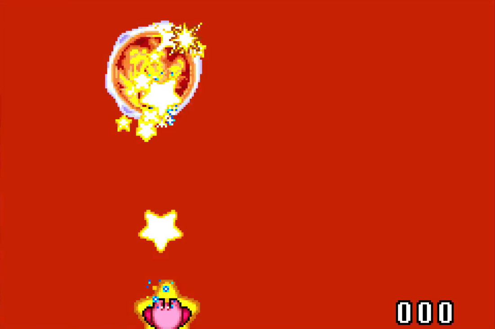

Rules
Timing
Timing starts on 1 player select.Timing stops on the last Dark Mind hit.(It looks like this)
Wii U VC
Use of the fast-loading glitch on Wii U VC is not allowed. This is a glitch that can happen very rarely at random but more often then not, you will get slow loads on the Wii U VC version. Hard resetting the game seems to fix both anomalies
Emulators
mGBA is the only allowed emulator (Bizhawk / Retroarch is allowed when using mGBA), and times below 30:00 must be done on an official release. BIOS is required to be used with emulators to normalize loads, this can be downloaded on the Internet.
To use BIOS in mGBA:
Under the tools menu -> go to settings -> BIOS -> Select your BIOS file under: gba bios file -> Check Use bios file if found
To use BIOS in Bizhawk:
Under the config menus -> Go to firmware -> Scroll to the GBA BIOS option and select your file -> Now go under the GBA Menu -> Go to sync settings -> Select false for skip BIOS
The best way to verify if the BIOS is working is if you see the GBA startup while hard resetting